|
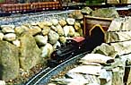
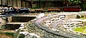
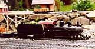
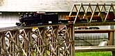
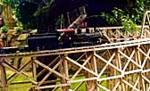
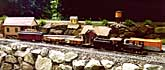
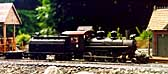
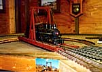
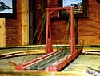
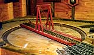
|
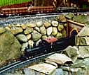
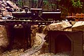
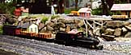
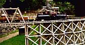
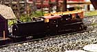
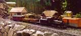
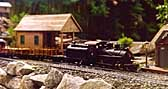
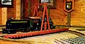
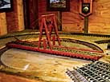
|
 This is Dave Goodson's outdoor layout in Seattle, WA. The outdoor railroad has 1150 feet total trackage, and is run on battery power and an RCS Radio Control system. The back fence is 180-185' across, and the railroad comes towards the front 50-60 feet from there.
This is Dave Goodson's outdoor layout in Seattle, WA. The outdoor railroad has 1150 feet total trackage, and is run on battery power and an RCS Radio Control system. The back fence is 180-185' across, and the railroad comes towards the front 50-60 feet from there.
The Colorado Consolidated is a merger of all the narrow gauges in the Colorado area, which allows him to run anything that was Colorado area narrow gauge. In one of his books he found a section on a planned railroad from the northern area of San Francisco bay, to Candelaria on the C&C, then on to Salina, Utah.
That is the basic interchange he and his brothers have built, except they connect to C&C at Mound House. The theory is the C&C is intact, and the line was extended, narrow gauge, to Mojave for interchange, not Owenyo. Keeler is still the shops. This is an operations oriented layout and the weekly operating sessions have really turned Mound House into a bottleneck of traffic.
Dave built this model of SP narrow gauge locomotive #9, which was a total wheels-up rebuild of a Bachmann 4-6-0. All that's left are a couple of handrails and some cab glass, and the Carson & Colorado lettering on the tank.
The chassis is a special design from Barry's Big Trains in Las Vegas, NV that has the correct driver spacing. The tender is on the original Bachmann frame. The tank of the tender is 4" black PVC pipe, cut lengthwise, then cut to length, with scrap 1/4" plexiglas for the sides glued on, plus scrap 1/8" plexiglas for the ends. Rivets are Simpson. Handrails are soldered brass rod - he uses the front 2/3 for the R/C antenna! Building the loco has been a 7 month project, and if folks want, he will pass along some tips on cab modifications and whaleback tender construction.
SP#9 was never meant to be an actual, exact rendition - the detail would never hold up outside. He modeled it as a very close rendition. The rivets on the tender have been somewhat simplified (hand drilling 220 of them was enough). Tender height was set to match the firebox height, as per pictures and drawings.
The battery power is 14.4v of ni-cads, and the Radio Control (RCS) has a Rev-Lite relay that is used for both directional and constant lighting (12v), allowing the headlights to change with direction while the marker lights stay lit.
There are three turntables built from scratch out of old cedar fence boards. Dave and his brothers built the turntables from a postcard he has had in his scrapbook since 1963 of #9 (in movie costume) being turned at Laws (or Bishop Creek). The two outside turntables have been somewhat simplified to minimize maintenance. For pivot bearings, the two outside versions of the turntables use a ball-bearing lazy-susan base. The inside one uses a large center spike, with "trucks" for the pit rail made up of some sheet metal bent into a channel and using Lionel 027 wheels with washers the same size as the flanges super-glued to the opposite side, making a grooved wheel. Axles are finishing nails, installed in holes in the channel drilled at an angle pointing at the pivot.
He and his brothers built all the bridges and trestles also from old cedar fenceboards. There is a lot of track inside - enough to park 90 pieces of rolling stock and 7 or 8 locos. Everything inside is code 332 LGB, Lionel, and whatever else I had leftover. Track power is available on these for testing and switching purposes. It's a big layout, and it does the job!
|